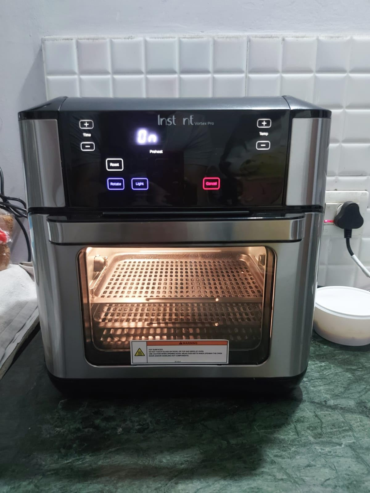
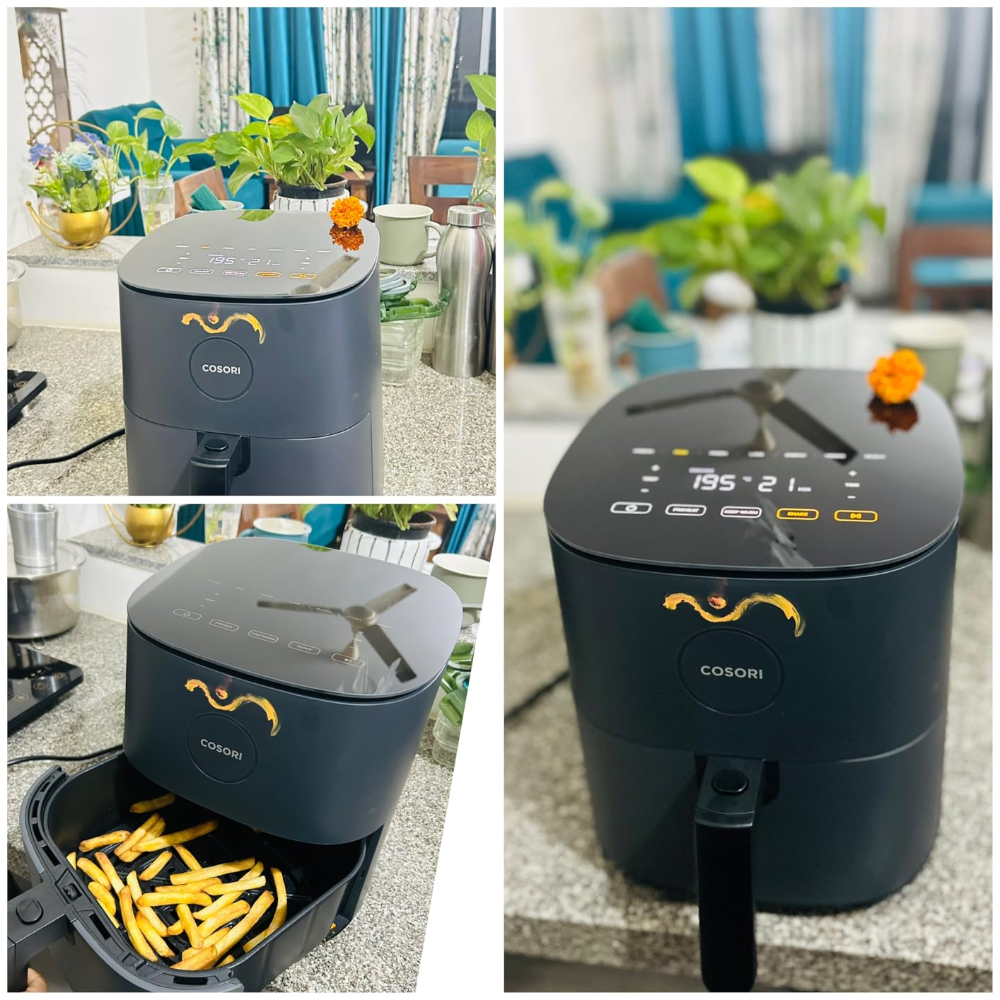
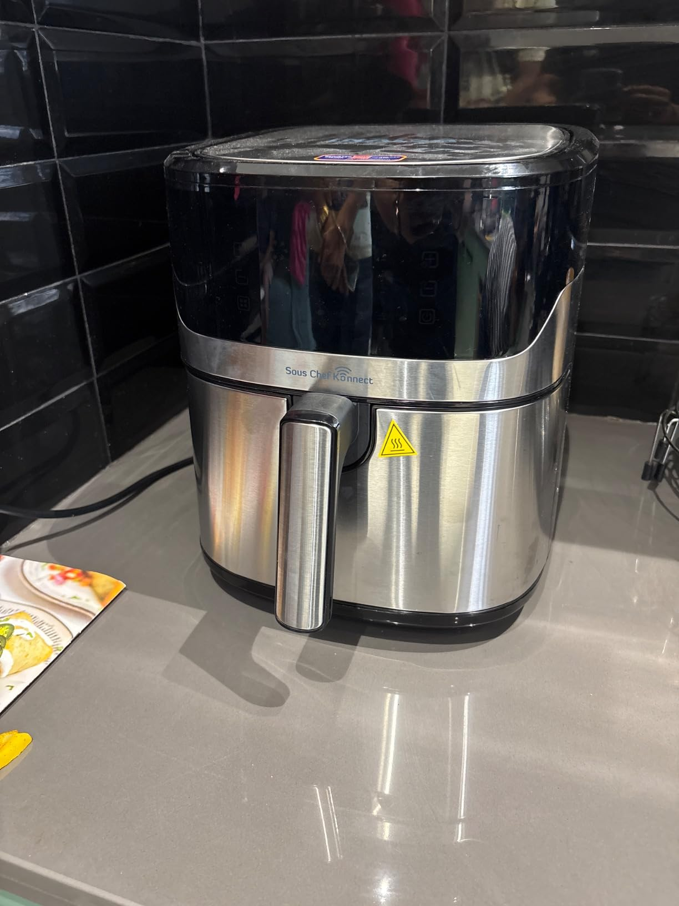

Philips Airfryer (Large, 4.2 L)

Price: ₹4,920
For latest discounts, please click on "Buy Now"
Disclaimer: This site contains affiliate links to products on Amazon, We earn from qualifying purchases to support our website and keep providing great content !
Why you should BUY!
The Philips Airfryer (Large, 4.2 L) is a versatile kitchen appliance that allows you to fry, bake, grill, and roast your favorite foods with little to no oil. Enjoy healthier meals with up to 90% less fat, while still achieving the crispy texture and delicious taste you love. Its large capacity is perfect for families, and the intuitive digital touchscreen makes it easy to select the right settings for your dishes. With rapid air technology, your food cooks evenly and quickly, saving you time in the kitchen. Easy to clean and dishwasher safe, the Philips Airfryer is a must-have for any home cook looking to make healthier choices without compromising on flavor.Rating: ★★★★☆ (4.4/5) - 3,215 Ratings
How to USE
Using the Philips Airfryer is simple and straightforward:
- Preheat the air fryer by setting the desired temperature and allowing it to run for a few minutes.
- Prepare your food by seasoning it as desired. You can use a small amount of oil if needed.
- Place the food in the air fryer basket, ensuring it is evenly spread out for optimal cooking.
- Select the appropriate cooking settings using the digital touchscreen. You can choose from various presets or manually set the time and temperature.
- Start the air fryer and let it cook your food. You may need to shake or turn the food halfway through the cooking process for even results.
- Once the cooking cycle is complete, carefully remove the basket and transfer the food to a plate.
- Allow the air fryer to cool down before cleaning. The basket and other removable parts are dishwasher safe for easy cleaning.
Enjoy your delicious and healthier meals with the Philips Airfryer!
Buy Now Go BackWhat people think !
"Customers love the quality, ease of use, and the delicious results from the air fryer. They find it lives up to its promises, making meal preparation simple and quick. Many appreciate its efficient cooking and minimal oil usage. However, some have issues with the user manual and have mixed opinions on the build quality."
Similar products
| Product | Image | Features | Price | Rating | Buy Now |
|---|---|---|---|---|---|
| Instant Pot Air Fryer Oven |  | Reknowned Air Fryer: For Over 100 Years, Instant Brands Have Been Innovators In Helping People Make And Enjoy Food Together. Today, Instant Brands Products Are In Millions Of Homes Worldwide. | ₹12,999 | 4.4/5 (15,156) | Check |
| COSORI 4.7 Liter Air Fryer |  | 1500W Fast Cooking, 9 Preset Menu, 30 Recipes Cookbook, Grill, Broil, Roast, Toast, Bake, Reheat, Defrost, Digital Touch Panel | ₹7,999 | 4.7/5 (29,854) | Check |
| INALSA Air Fryer for Home 6.5L |  | 1600W, Digital Control with LED display & smart touch control. Set the time up to 60 Min and the temperature Up to 200 °. It has a buzzer when it is finished cooking, a cool to the touch handle and non-slippery handles. | ₹6,045 | 4.3/5 (5,045) | Check |